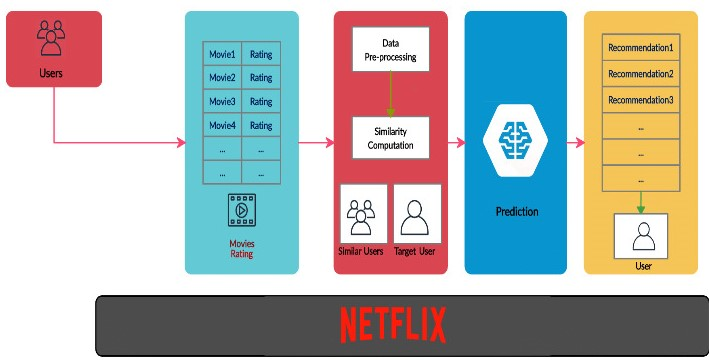

Introduction to Recommender System
When it comes to a recommender system, we must ask why it exists, or rather, what is the point of its existence, and what specific problem is it designed to solve.
With the rapid development of modern technology and the increasing volume of data production, people are feeling increasingly helpless in the face of massive amounts of data. Information overload is an increasing problem in people's daily life. When we are browsing pages, we seek to find the web pages that are most attractive to us. However, as the Internet industry blooms, more and more information such as video, news, and products are flooding the Internet. That's why we need a proper \textbf{Recommender System (RS)} to filter the information we are not interested in. Specifically, when talking about RS, we often think of a technology named \textbf{Search Engine (SE)}, both of which are two different mechanisms proposed to solve the information overload challenge mentioned before. Generally speaking, SE is more suited to situations where people have a clear purpose, where their search for information is translated into precise keywords, and then the SE finally returns a list of results to the user to complete the searching process. In contrast, RS may be more suitable for individuals who have no specific idea, or who have a vague purpose - in layman's terms, the user does not even know what he or she wants, which is the common usage scenario for RS. RS feeds the user's historical behaviour or interest preferences or demographic characteristics, for example, to the recommendation algorithm to generate a list of items that may be of interest to that user, where the user is passive concerning RS.
In addition, the Long Tail theory (stating that people usually focus on highly exposed items and ignore the less exposed ones) \cite{anderson2006long} explains the existence of an RS. Experiments have shown that although the sales of each product in the long tail section are small, their aggregation, as well as total profits, can be comparable to the initial section because of the length of the tail \cite{seely2008open}. The RS provides exposure to all items, thus tapping into the potential profitability of the long-tail items, which becomes one of the advantages of RS utilization in Internet enterprises. The reason is that, compared to physical stores, online companies can set up virtual shelves, offering consumers a huge selection of products and a 'one-stop shop' with almost zero shelf cost, as it may only require an additional website.
Recommender System is a technology that applies collaborative intelligence to make recommendations. These recommendations can typically be generated based on user preferences, product characteristics, the user's purchase records and other environmental factors (e.g. time of day, season, location, etc.) \cite{Machineheart}. Essentially, it is a technical means of finding the content of interest to the user from a vast amount of information when the user's needs are not clear. Recommended items encompass movies, books, restaurants, news items, and others. The overall classification of RS architecture is illustrated in Fig. \ref{fig:classification}, while the two main types of RS are \textbf{content enriched recommendation} and \textbf{Collaborative Filtering (CF)}, there is also a special category of \textbf{contextual-based recommendation}, which uses temporal or sequential information associated with interactions as model features \cite{wu2022survey}.
In particular, the content enriched recommendation focuses on the intrinsic qualities or inherent attributes of an item, completing a task based on the information about the content of that item without relying on the user's personal opinion on it. On the other side, the CF method works through the power of collective intelligence and filtering out the items that are not of interest to the user. CF mechanism is based on the assumption that a good way to discover the real interest of a specific user is to find the other users who hold similar preferences to him and then recommend their interests to that user. At last, the contextual-based recommendation is an information-rich recommendation method that utilizes interaction factors with contextual data to support prediction details.
Challenges in Recommender System
While RS is flourishing nowadays, it also faces lots of challenges in the application layer that needed to be investigated, researched and solved in order. Here we list some typical points and analyse them carefully to find the original problems.
Cold Start Problem: The main purpose of an RS is to recommend plenty of subjects to a large number of users who may produce interest in them. For any Internet recommendation product, both the related subject matter and the users are changing and growing constantly, so the system must often face the emergence of new batches of these two items. Therefore, the cold start problem of the recommendation system refers to that how to recommend the existing subject matter to new users to satisfy them since we don't know what they like, and how to distribute the new subject matter to users who like it since it hasn't been rated by anyone \cite{sharma2013survey}. There are some general ideas that help to solve the cold start problem, which includes collecting user interest information at the registration stage, providing non-personalized recommendation services, performing recommendation tasks based on content, adopting a strategy based on relational delivery, etc \cite{saveski2014item}.
Sparsity Problem: Sparsity problem is one of the essential issues encountered by RS and it refers to data sparsity in the user rating matrix, which may have a great influence on recommendation task performance \cite{sharma2013survey}. Generally, it happens when a user possesses a large matrix storing data of his or her purchased products or favourite music or watched movies, but the user did not rate these items. In this way, the user-item matrix dimension increases, as well as data sparsity evolves, leading to poor quality of RS results \cite{mohamed2019recommender}. CF suffers from this problem as its performance depends a lot on the rating matrix.
Scalability: The scalability of algorithms is another significant challenge faced by RS as we have a larger scale of data nowadays. To be specific, scalability is a property of a system that indicates its ability to handle an ever-growing volume of information elegantly. In reality, with the tremendous growth of information on the Internet and the explosion of user data, it becomes more challenging for only one RS algorithm to deal with the whole process. It is possible that some recommendation algorithms provide better results when they are applied on relatively small datasets, but may reflect inefficient or poorer performance on very large datasets \cite{kumar2016approaches}. Therefore, some advanced large-scale evaluation methods are necessary to solve this problem \cite{george2005scalable}.
Privacy Issues: In order to generate high-quality personalised recommendations, RSs must collect as much user data as possible and maximize their use. On the other hand, this may produce a negative impression in the minds of users, as the system remains access to their private information and is often collecting private data from them \cite{kumar2016approaches}. Therefore, the technology needs to be designed in such a way that user data can be used sensibly, carefully and discreetly, ensuring that information about the user's true preferences is not freely available to malicious people \cite{lam2006you}. Besides, the problem may be addressed by Federal Learning.
Information Cocoons: The information cocoon is a terrible phenomenon prevalent in modern society, literally meaning that information is blocked by a cocoon of worms, reflecting a social problem that is now diffused with the popularity of personalised recommendations \cite{cantador2015cross}. Specifically, for example, if user X is a sports fan, then most of the information X gets is sports-related, and it is difficult to get other information related to music or the military since the platform pursues the click-through rate and will keep pushing content of interest to X to get high ad views. Over time, due to the information cocoon, users have single access to external information, and X's social circle and horizon may also become narrower. It would be pathological if the whole society fell into the information cocoon effect of personalised recommendation systems. As a result, the cross-domain recommendation method can be an effective solution to provide diverse recommendations to users.
ML Applications Cases in Recommender System
Amazon
Amazon is one of the world's largest eCommerce enterprises that possesses a giant variety of products on sale. It is famous for its extremely accurate result on customized recommendations in its website contents, and for instance, Fig. 2 shows parts of my Amazon homepage, which certifies that it knows me well. Moreover, it has been working on an algorithm that is responsible for processing and analysing a huge amount of data and predicting what users like to improve their customer experience and therefore increase sales as well as profits, which designs based on AI and ML.
 |
Particularly, as mentioned before, an accurate recommendation result always relies on the preponderance of data. Therefore, the recommendation engine usually collects two types of information, including general data about users and items, as well as relations or dependencies data between them \cite{AmazonML}. Grasping the existing attitudes of users towards online shops will give RS insight into the real mechanisms that govern customers' purchasing decisions. Besides, Amazon's recommendation algorithm focuses on three different aspects of operation relationship, they are user-product, product-product, and user-user, all of which help to build an integral relationship structure between the user and their product of interest.
Netflix
As the world's leading Internet television network, Netflix has more than 160 million members range over 190 countries, they enjoy various kinds of videos every day, including feature films, science fiction films, original series, etc \cite{NetflixML}. In consequence, Netflix invests a lot in AI and ML techniques to use them in diverse areas, especially for RS, to optimize its RS service, increase user satisfaction with the movie RS and maintain the willingness of users to continue to choose Netflix. Moreover, the ML algorithm works creatively behind the screen that acquiring bunches of data every day and updating itself to guess more accurately about what a user would like to watch on that day. Combined with data science, ML in Netflix enables the RS to personalise the user experience according to his or her preferences history.
Figure \ref{fig:NetflixRS} shows the overall procedure of how Netflix RS works. Generally, the recommendations are on the strength of users' behaviour relating to the searching or viewing, as well as their ratings regard to each movie they watched \cite{aggarwal2022has}. Furthermore, some ML algorithms are applied to implement the recommendation result of each specific user, which is in the form of list representation. In detail, whenever a user visits one of Netflix's services, the RS estimates the probability that the user will watch a particular piece of content based on the following factors \cite{NetflixRS}: (1) Some basic information about the title, categories, year of release and more; (2) Length of time a viewer spends on watching the programme and the time of the day a viewer watches, since human's watching behaviour may vary with lots of factors; (3) Viewers feedback or interactions with the content, for example, the comments or ratings; (4) Information on other viewers with similar viewing preferences and tastes, which is beneficial to construct the user-user relationship matrix for CF implementation. Netflix's ML-based recommendation algorithm takes information from users themselves and iterates on it. Every time a user watches a movie or a video, it gathers data that provides the ML algorithm behind the scenes with a new dataset and updates it. The more viewing operation that takes place, the more accurate and compatible the algorithm becomes.
